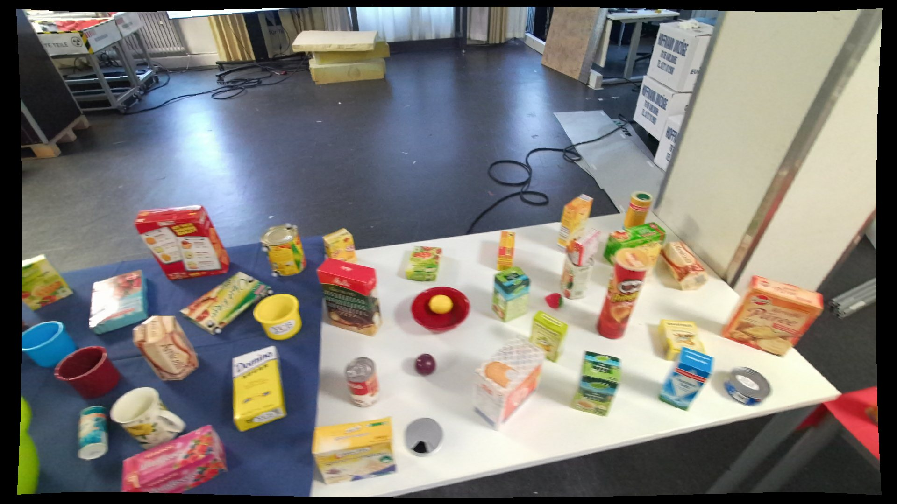
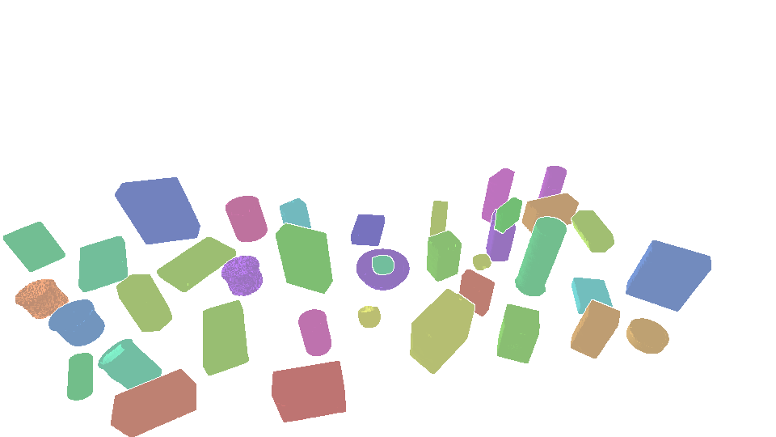

KITchen dataset explorer
Explore the data
Browse annotated scenes from the robot's head camera, inspect every object model in 3D, and see what the 2D boxes, masks and 6D poses cover across the whole release.


- Annotated objects
- 3,034,854
- Confident labels
- 2,901,857
- 6D poses
- 2,586,235
- Object models
- 111
- Average objects per image
- 31.7
- Kitchens
- 2
Interactive
Dataset explorer
Every object in these scenes comes with a bounding box, an instance mask, and a 6D pose, on top of completed depth. Toggle the layers, hover or tap any object, or pick another scene below.
Textured 3D models
Object library
The 108 objects annotated at least 100 times: grocery packages, YCB objects, cups, utensils and cookware. Click one to inspect its mesh in 3D.
By the numbers
Dataset statistics
Computed from the release annotations.
Annotations per object class
All 108 classes with at least 100 annotations, sorted by count. Hover or tap a bar for details.
Objects per image
Cluttered scenes: half the images hold … or more annotated objects.
Camera-to-object distance
Distance from the robot's head camera to each posed object.
Object size in the image
Bounding-box area as a share of the 1920×1080 image. Most objects are small.
Where objects appear
Density of bounding-box centres across all annotated objects.
Along the recordings
Average annotated objects per image in recording order (smoothed). The strip above shows the benchmark split: the lab room first, all train, then the built-in kitchen, split into validation and test by setup.
Benchmark splits
Train is the lab room; validation and test are the built-in kitchen, so test scores show how a method does in a room it has never seen. In the kitchen, each setup (one arrangement of objects, which comes back in many short clips) goes whole to validation or test, so no arrangement is in both. About 74%, 9% and 17% of the images are train, validation and test; a few clips are left out. Every validation and test frame is scored.
| Split | Objects | Confident | 6D poses |
|---|
Get the data
Download & format
Four parts, each holding many recording sequences as one folder of images plus annotation files. Object i of an image is line i in labels/, seg_labels/ and mask obj<i>.
What's inside
- RGB 1920×1080 images from the robot's head camera
- Depth raw and completed, aligned to RGB
- 2D boxes YOLO format, 112 class ids (111 objects plus "other")
- Instance masks one binary PNG per object, plus polygons
- 6D poses BOP-style
scene_gt.jsonper part - 3D models 111 textured meshes (
obj_XXXXXX.ply) - Confidence
ignore.jsonlists the ~4% of 2D labels that are unconfirmed (kept, but outside the confident set)
import json, cv2
from pathlib import Path
root = Path("KITchen_labels_1")
classes = root.joinpath("classes.txt").read_text().split("\n")
ignore = json.loads(root.joinpath("ignore.json").read_text())
stem = "000000"
rows = [l.split() for l in (root / "labels" / f"{stem}.txt").read_text().splitlines() if l]
untrusted = set(ignore.get(stem, []))
for i, row in enumerate(rows):
if i in untrusted:
continue # or: mask out the loss here
cls, cx, cy, w, h = int(row[0]), *map(float, row[1:5])
mask = cv2.imread(str(root / "masks" / f"{stem}_obj{i:04d}.png"), cv2.IMREAD_GRAYSCALE)
print(classes[cls], (cx, cy, w, h), mask.shape)